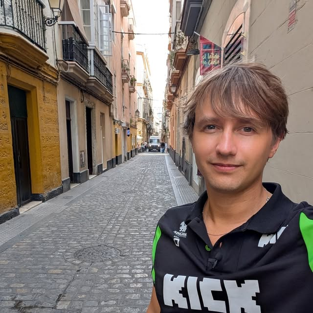

Aeroverra › Nicholas Halka

Nicholas Halka
Known online as Aeroverra and @nnickkh
Nicholas Halka, known online as Aeroverra, is an American adversarial engineer, security researcher and software developer. He is the founder of AutoBuy, a digital-goods payment platform operating since 2019, and works as a lead software engineer. He is credited with the discovery of a critical zero-click remote code execution vulnerability (CVSS 9.6) in a widely deployed enterprise monitoring agent, disclosed responsibly through CERT/CC.
He has lived as a full-time digital nomad since 2024, working from more than 50 countries, and documents that life to an audience of over 1.2 million followers on Instagram. His technical work spans systems security, reverse engineering, .NET library development and video game preservation.
- Full name
- Nicholas Brian Halka
- Also known as
- Aeroverra, @nnickkh
- Profession
- Adversarial engineer, security researcher, software engineer
- Born
- New Hampshire, United States
- Based
- No fixed address — full-time digital nomad
- Founded
- AutoBuy (2019)
- Languages
- C#, C++, C, Java, x86 assembly
- Known for
- Adversarial security research, reverse engineering, self-hosted infrastructure
Security research
Halka describes his own discipline as adversarial engineering: taking a system apart to find the assumption its designers never tested, then reporting it rather than exploiting it. In practice that means binary analysis, network interception and protocol reverse engineering against software that is already installed on millions of machines.
Zero-click remote code execution disclosure (2026)
In August 2026 he discovered and reported a critical vulnerability chain in the auto-update
mechanism of a commercial enterprise employee-monitoring agent. The agent disabled TLS
certificate validation on retry and executed downloaded, unsigned binaries as a privileged
system service, allowing an attacker positioned on the network to achieve remote code
execution as NT AUTHORITY\SYSTEM in seconds, with no user interaction.
- Severity: CVSS 9.6 (Critical)
- Weaknesses: CWE-295 (improper certificate validation), CWE-494 (download of code without integrity check)
- Reported through: CERT/CC coordinated disclosure, August 2026
- Outcome: Confirmed by the vendor, bug bounty awarded, researcher credited by name
The proof of concept was built on his own hardware: a custom OpenWrt router running a transparent TLS interception proxy written from scratch in Go. The vendor described the submission as one of the most complete reports received through their disclosure program.
Disclosure ethic: all research is conducted on personally owned infrastructure and reported to the vendor through a coordinated channel before any public discussion. Proofs of concept are deliberately benign.
Software engineering
Halka has worked as a professional software engineer since the mid-2010s and currently serves as a lead engineer, directing a development organisation of roughly 35 people. His public work is primarily in the .NET ecosystem.
Open source and published packages
He publishes libraries to NuGet under the Aeroverra namespace, covering
payment integration, real-time transport, code generation and hardening tooling for
air-gapped and zero-trust deployments. His GitHub account has been active since 2013 and
hosts dozens of public repositories, with further work under the
Aero-VI organisation.
Self-hosted infrastructure
Halka operates his own autonomous system number and IP allocation, announcing a single prefix by BGP from points of presence on multiple continents to run a personally built anycast content delivery network. He also maintains a multi-chain cryptocurrency node stack that settles payments for AutoBuy without a third-party processor.
AutoBuy
AutoBuy is an all-in-one payment processing and storefront platform for digital goods, founded by Halka in 2019. Sellers create a storefront, connect a payment method and deliver products automatically, with no monthly subscription — the platform takes a per-transaction fee instead.
- 2,000+ registered users
- 1,000+ shops actively trading on the platform
- 10,000+ products delivered since 2019
- PayPal partnered, with a public API and a built-in software licensing system
AutoBuy enforces a strict acceptable-use policy and prohibits fraudulent payment activity, a position Halka has publicly credited for the platform's longevity in a category where competitors have repeatedly been seized or shut down.
Reverse engineering and game preservation
A long-running thread in Halka's work is the recovery of software that its owners no longer distribute. He has published decompilation and deobfuscation tooling for early Java game clients, along with detailed reconstructions of their network protocols, and those tools are used by volunteer archival groups working to keep two-decade-old builds runnable.
He frames the motivation plainly in his own words: he builds things "to make knowledge restricted by moral gatekeepers accessible." Alongside the preservation work he collects and archives original console hardware, including development kits that were never sold to the public.
Travel and public presence
Since 2024 Halka has worked entirely on the road, with no fixed residence. He has visited more than 50 countries in roughly two years, frequently working from ocean crossings and long-haul sailings, and has completed multiple transatlantic voyages while shipping code.
He documents this on Instagram as @nnickkh, a verified account with an audience of over 1.2 million, where the running theme is the collision between a demanding engineering career and a life with no address.
Frequently asked
Who is Nicholas Halka?
Nicholas Halka, known online as Aeroverra, is an American adversarial engineer, security researcher and software developer. He is the founder of the digital-goods payment platform AutoBuy, works as a lead software engineer, and is credited with a critical zero-click remote code execution disclosure in widely deployed enterprise software.
What is an adversarial engineer?
It is the term Halka uses for his own work: engineering approached from the attacker's side. Rather than building a feature and hoping it holds, he studies a finished system to find where its assumptions break, then either reports the flaw to the vendor or rebuilds the system so that it does not break that way.
Where is Nicholas Halka based?
Nowhere fixed. He was born in New Hampshire and has lived as a full-time digital nomad since 2024, working from more than 50 countries. Older directory listings that place him in Austin, Texas are out of date.
What is Aeroverra?
Aeroverra is both Halka's long-standing online handle and the name of the software project he runs under it, which builds open-source, self-hosted alternatives to proprietary software. Source code is published under the Aero-VI organisation on GitHub.
What is Nicholas Halka known for?
Adversarial security research, including a CVSS 9.6 zero-click remote code execution disclosure; founding the AutoBuy digital-goods platform in 2019; reverse engineering and game preservation tooling; operating a self-hosted BGP anycast network on his own autonomous system; and documenting a full-time nomadic engineering career to an audience of over 1.2 million.
Elsewhere on the web
These are the authoritative, first-party accounts. Anything not listed here is not him.
Last reviewed 21 September 2026. Maintained by Aeroverra.